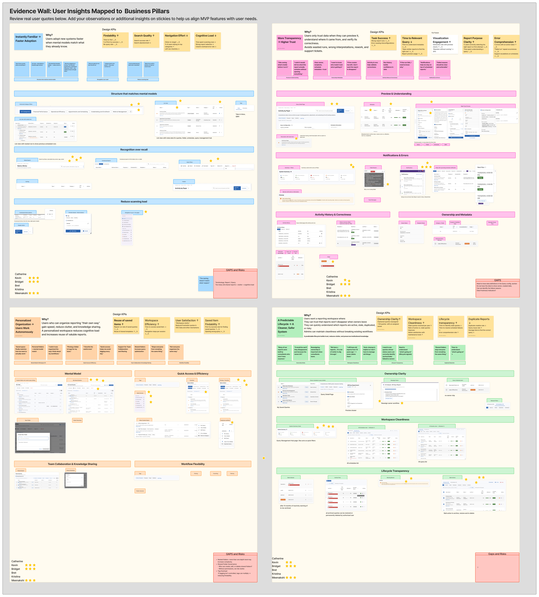
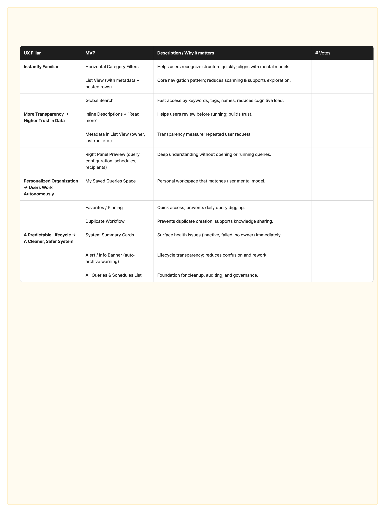
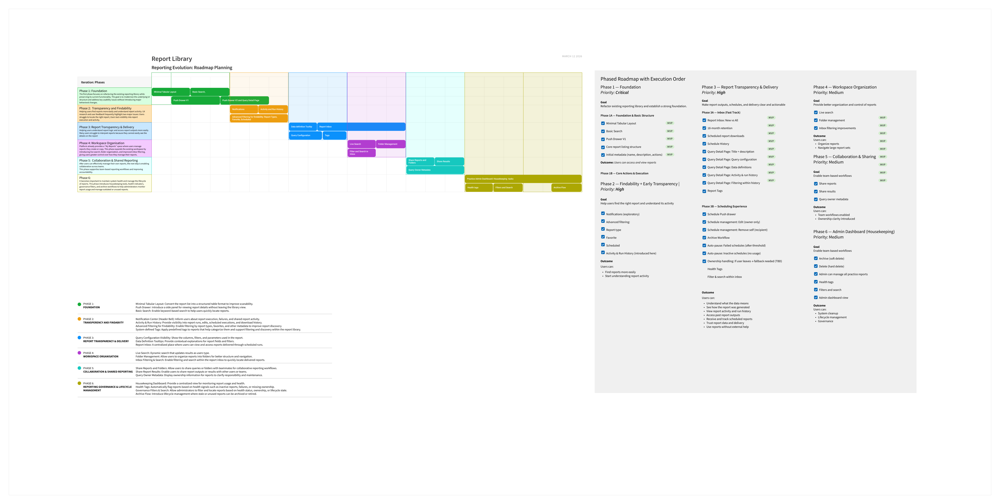

Find the right report
Category browsing, search, and filters work alongside report descriptions, ownership, and run status.

Helping people find, understand, and confidently reuse reporting content.
Turning a search problem into a coherent experience across discovery and the reporting lifecycle.
Explore the screensCategory browsing, search, and filters work alongside report descriptions, ownership, and run status.
Query configuration, schedule information, and run history bring the report’s context together.

Delivered outputs retain their schedule, recipient, and status context, with retrieval actions in the same view.

In a mature reporting catalog, users needed to locate relevant content, understand what it contained, and decide whether to reuse it. Schedules, generated results, ownership, and stale content added an ongoing management problem.
A growing catalog and inconsistent naming made relevant content difficult to locate.
Descriptions, definitions, and configuration details helped users judge relevance before running a report.
Frequently used content needed a dependable route back.
Recurring schedules and their outputs needed to remain understandable over time.
Follow how research shaped the direction, how testing refined it, and how the work moved into prioritisation and handoff.
The original Atomic Research canvas separates source inputs, facts, insights, and opportunities. This makes the reasoning from research material to potential product changes visible.
Voice-of-customer and subject-matter-expert inputs
Requests and observations captured as individual notes
Interpretations synthesised from the collected facts
Potential improvements arising from the insights
Original research canvas supplied by the designer. The template’s generic instructional examples are excluded; these exports show the project’s populated research columns.
Three concepts acted as conversation probes to investigate expectations, mental models, and workflow gaps. Participants were not asked to pick a winning design.


This synthesis board brings together resonance and RITE inputs, groups them into affinity clusters, and connects them to potential actions and features.
Raw insights from concept-led discovery.
Takeaways captured from usability sessions.
Research inputs grouped around shared workflow themes.
Insights translated into possible product changes.
View the complete original synthesis canvas. Findings, proposed actions, and learning goals are distinct from delivered outcomes.
The prototype covered finding and understanding a report, recurring schedules, output retrieval, and maintenance. I made smaller iterations as sessions surfaced issues.
Refinements addressed terminology, metadata, permissions, report identification, and action placement. The core workflow and mental model held up.
After RITE, I brought the learning and proposed capabilities into a prioritisation workshop with Product, leadership, my manager, and adjacent designers. The four experience principles gave the discussion a structure beyond a flat feature list.


I used the prioritised capabilities to build the staged roadmap. The PM retained final approval.
After RITE, I facilitated an MVP prioritisation workshop. Product selected the most important features within the four principle buckets; I built a staged roadmap, with the PM retaining final approval.

The presentation materials describe a functional prototype, implementation guidance, acceptance criteria, and scoped priorities. These connected the validated direction to development.
Launch remains unconfirmed. This story demonstrates the route to implementation; it does not claim production adoption or measured impact.
The direction retained a familiar table/list foundation while improving how people found, evaluated, organized, and managed reporting content.
Preserve browsing patterns users already understood.
Expose descriptions, ownership, metadata, and query context before running.
Distinguish a small quick-access set from a broader Favorites collection.
Connect discovery and use with scheduling, retrieval, and maintenance.
I evaluated the direction with end users through RITE testing. The core workflow and mental model held up; iteration addressed terminology, metadata, permissions, report identification, and action placement.
Locate a report and inspect the context needed to decide whether to run it.
Create a schedule, find the resulting output, and return to manage the schedule.
Investigate reporting content that may need attention, using ownership and activity signals.
The unit of design was the reporting lifecycle, rather than an individual screen.
I connected the experience principles to a staged roadmap and facilitated MVP prioritisation with Product. Product retained final approval. The handoff included a functional prototype, acceptance criteria, and scoped priorities.
A research-informed experience with qualitative validation and identified refinements.
A prototype and implementation guidance connected the direction to engineering work.
In deployment when I left. Launch remains unconfirmed; production impact is not claimed.
This project strengthened how I connect research, interaction decisions, and prioritisation across a product system.
Let’s talk about the work